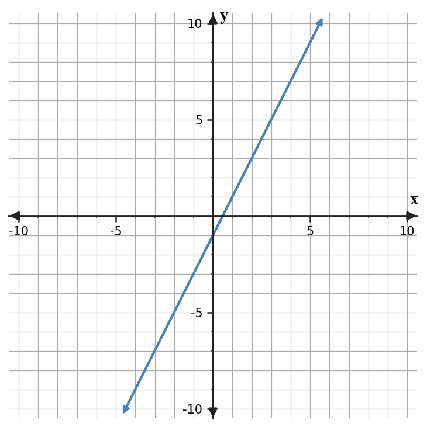
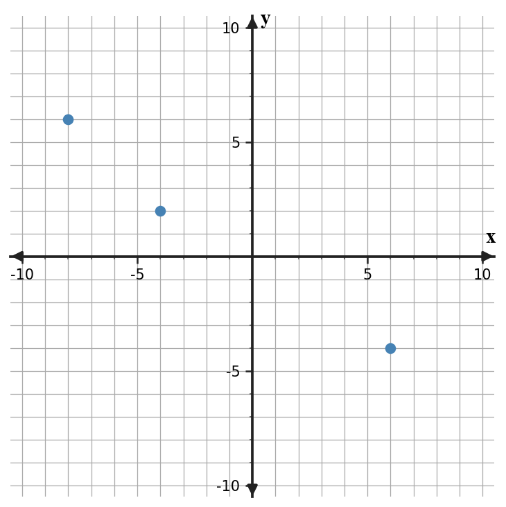
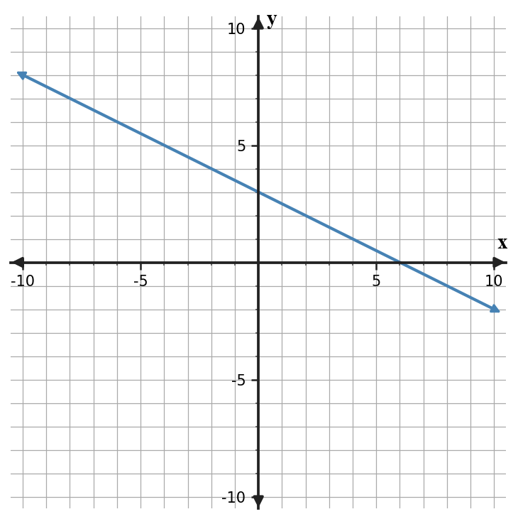
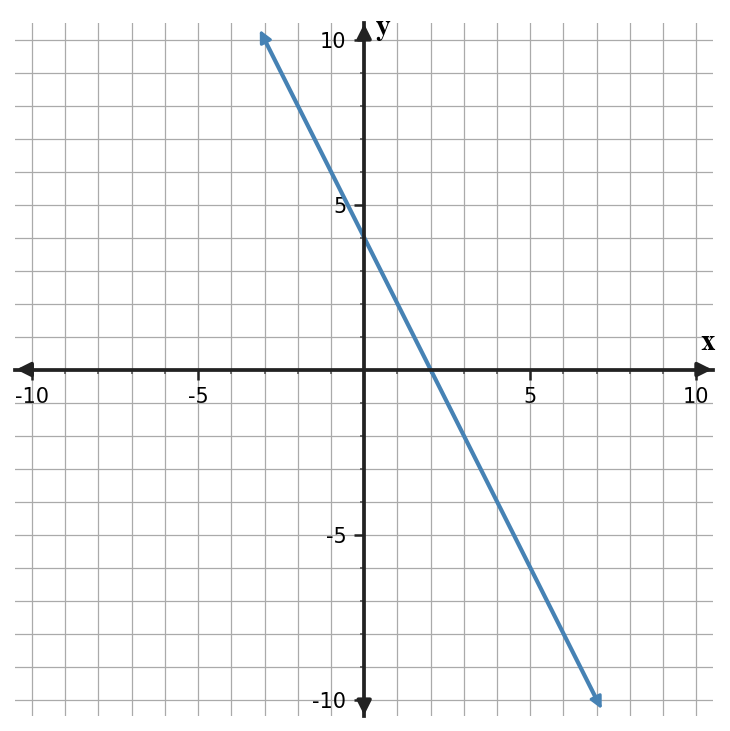
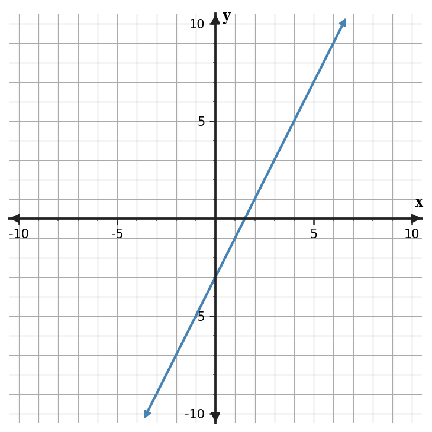
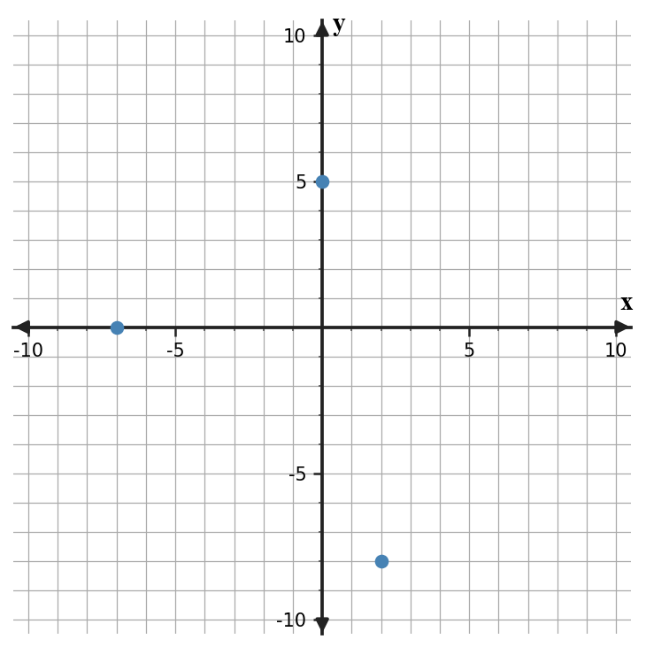
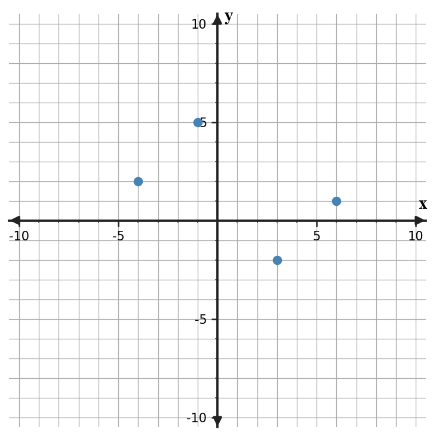
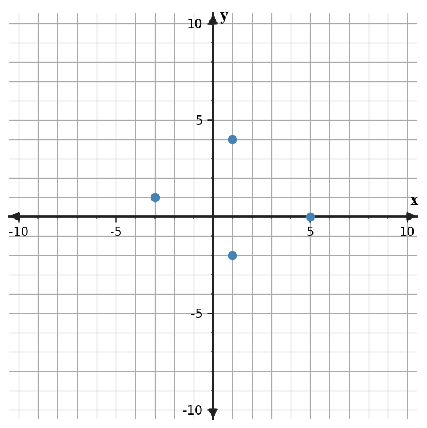
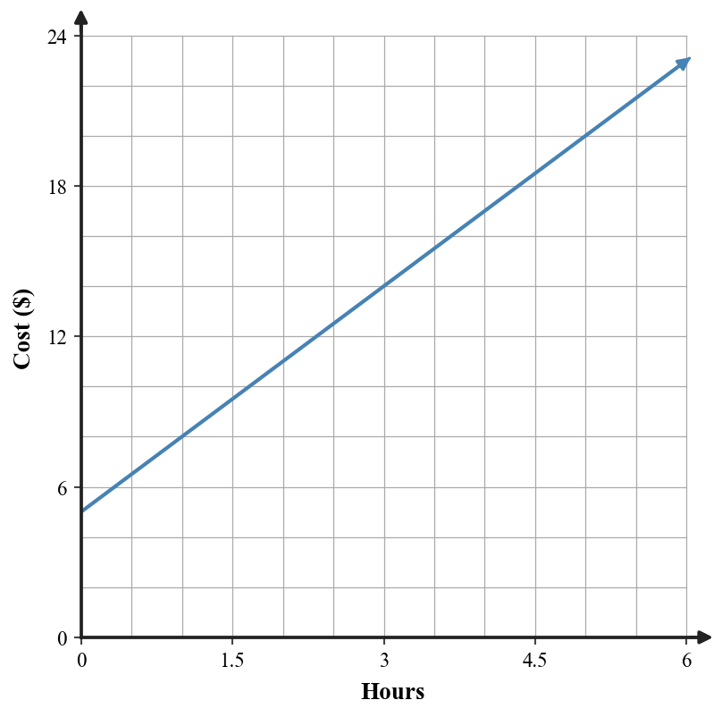

Plot and read ordered pairs.
Plot the three ordered pairs on the coordinate plane. Then write the ordered pair in Quadrant IV.

Answer / solution
(3, -6)
The only point with positive x and negative y is (3, -6).
Accepted map: 596b64ceac90f8b60de430fe3838464b83237cf141c39aa1b35a929abc2d93cb | 208 finished tasks
Plot the three ordered pairs on the coordinate plane. Then write the ordered pair in Quadrant IV.
(3, -6)
The only point with positive x and negative y is (3, -6).
What is the ordered pair of the plotted point with x-coordinate -2?

(-2, 3)
At \(x=-2\), the plotted point is 3 units above the x-axis, so the point is (-2, 3).
Point P is shown. State the x-coordinate and y-coordinate, and describe what each coordinate tells you about its location.

\(x=5\), \(y=-3\)
The x-coordinate 5 means 5 units right of the y-axis. The y-coordinate -3 means 3 units below the x-axis.
Use the graph to identify both intercepts of the line.

x-intercept (4, 0); y-intercept (0, 4)
The line crosses the y-axis at 4 and the x-axis at 4.
Substitute \(x=4\) into the expression and evaluate.
17
Substitute the given value(s) (\(x=4\)) and follow order of operations to get 17.
Evaluate for \(t=7\) and decide whether a positive answer would be reasonable.
-10
Substitute \(t=7\): 4 - 2(7) = 4 - 14 = -10. A positive result is not reasonable because 14 is being subtracted from 4.
Plot A(-4, -5) and B(6, 2). Which point has the greater y-coordinate?
B
Point B has \(y=2\) and point A has \(y=-5\); 2 is greater.
What is the ordered pair of the plotted point with x-coordinate -2?
(-2, 3)
At \(x=-2\), the plotted point is 3 units above the x-axis, so the point is (-2, 3).
Find the slope of the line shown.

2
The line rises 2 units for every 1 unit to the right, so slope = 2.
A tank contains 18 liters of water at 2 minutes and 42 liters at 6 minutes. Find and interpret the average rate of change over this interval.
6 liters per minute
(42-18)/(6-2) = 24/4 = 6. The amount of water increased by 6 liters each minute over the interval.
Evaluate the expression for \(m=-3\).
19
Substitute the given value(s) (\(m=-3\)) and follow order of operations to get 19.
Evaluate for \(r=-5\) and \(s=4\).
1
Substitute the given value(s) (\(r=-5\), \(s=4\)) and follow order of operations to get 1.
Read the graph carefully. What is the y-coordinate of the point whose x-coordinate is -8?

6
The plotted point at \(x=-8\) is (-8, 6), so the y-coordinate is 6.
Use the graph to identify both intercepts of the line.
x-intercept (4, 0); y-intercept (0, 4)
The line crosses the y-axis at 4 and the x-axis at 4.
Find the slope of the line shown.

-1/2
The line falls 1 unit for every 2 units to the right, so slope = -1/2.
A candle is 24 cm tall at 0 hours and 15 cm tall at 3 hours. Find and interpret its rate of change.
-3 cm per hour
(15-24)/(3-0) = -9/3 = -3. The candle height decreases by 3 cm each hour.
For the rule shown, find the output when \(x=-2\) and write the result as an ordered pair.
(-2, 1)
2(-2)+5=1, so the ordered pair is (-2, 1).
For the rule shown, what input gives an output of 19?
4
Set 4x+3=19, so 4x=16 and \(x=4\).
Plot A(-4, -5) and B(6, 2). Which point has the greater y-coordinate?
B
Point B has \(y=2\) and point A has \(y=-5\); 2 is greater.
What is the ordered pair of the plotted point with x-coordinate -2?
(-2, 3)
At \(x=-2\), the plotted point is 3 units above the x-axis, so the point is (-2, 3).
Use the table to write the ordered pair for input 3.
| input | output |
|---|---|
| 0 | 2 |
| 1 | 5 |
| 3 | 11 |
(3, 11)
Input 3 corresponds to output 11.
Use the rule to find the output for input 4.
11
2(4)+3=11.
Plot the table on the coordinate plane.
| x | y |
|---|---|
| -2 | -1 |
| 0 | 3 |
| 2 | 7 |
Points (-2,-1), (0,3), (2,7)
Plot each input-output row as an ordered pair.
Does the table match the rule? Give one matching value as evidence.
| x | y |
|---|---|
| 0 | 4 |
| 2 | 6 |
| 5 | 9 |
Yes
For example, \(x=2\) gives \(y=6\) in both representations.
A machine adds 6 to every input. Write the ordered pair for input -1.
(-1, 5)
-1+6=5.
If f(x) = 3x - 1, find f(2).
5
3(2)-1=5.
Use the rule to complete the table.
| x | y |
|---|---|
| -1 | ? |
| 1 | ? |
| 4 | ? |
3, 1, -2
Substitute each x-value into the rule.
The table changes by +2 in y whenever x increases by 1 and starts at \(y=3\) when \(x=0\). Which rule matches it? Write the rule.
\(y=2\)x + 3
Rate 2 gives the coefficient and start 3 gives the constant.
Plot the ordered pairs from the table on the blank coordinate plane.
| x | y |
|---|---|
| -2 | -3 |
| 0 | 1 |
| 2 | 5 |
| 4 | 9 |
Points (-2,-3), (0,1), (2,5), (4,9)
Each table row gives one ordered pair to plot.
Use the rule to complete the table.
| x | y |
|---|---|
| -1 | ? |
| 0 | ? |
| 3 | ? |
-3, -1, 5
Substitute each input into \(y=2\)x-1.
A parking lot charges a $4 entry fee plus $2 per hour. Complete a table for 0, 1, 3, and 5 hours.
| hours | cost ($) |
|---|---|
| 0 | ? |
| 1 | ? |
| 3 | ? |
| 5 | ? |
$4, $6, $10, $14
Use cost = 4 + 2(hours).
Does the table match the rule? Support your answer with at least two rows.
| x | y |
|---|---|
| 0 | 1 |
| 2 | 7 |
| 4 | 13 |
Yes
For \(x=0\), \(y=1\); for \(x=2\), \(y=7\); for \(x=4\), \(y=13\). Every row matches \(y=3\)x+1.
Graph the relationship in the table.
| x | y |
|---|---|
| -3 | 5 |
| 0 | 2 |
| 3 | -1 |
Points (-3,5), (0,2), (3,-1)
Plot each row as an ordered pair.
Create outputs for \(x=-2\), 1, and 4.
| x | y |
|---|---|
| -2 | ? |
| 1 | ? |
| 4 | ? |
8, 5, 2
Substitute the three inputs into y=-x+6.
A streaming service costs $8 per month plus $3 for each movie rental. Write a rule for total monthly cost C when r movies are rented.
\(C=8\) + 3r
The fixed cost is 8 and each rental adds 3.
Does the graph represent the equation? Explain using slope and intercept.

Yes
The graph has slope -2 and y-intercept 4, matching the equation.
Plot the three ordered pairs on the coordinate plane. Then write the ordered pair in Quadrant IV.
(3, -6)
The only point with positive x and negative y is (3, -6).
What is the ordered pair of the plotted point with x-coordinate -2?
(-2, 3)
At \(x=-2\), the plotted point is 3 units above the x-axis, so the point is (-2, 3).
Point P is shown. State the x-coordinate and y-coordinate, and describe what each coordinate tells you about its location.
\(x=5\), \(y=-3\)
The x-coordinate 5 means 5 units right of the y-axis. The y-coordinate -3 means 3 units below the x-axis.
Use the graph to identify both intercepts of the line.
x-intercept (4, 0); y-intercept (0, 4)
The line crosses the y-axis at 4 and the x-axis at 4.
Read the graph carefully. What is the y-coordinate of the point whose x-coordinate is -8?
6
The plotted point at \(x=-8\) is (-8, 6), so the y-coordinate is 6.
Plot A(-4, -5) and B(6, 2). Which point has the greater y-coordinate?
B
Point B has \(y=2\) and point A has \(y=-5\); 2 is greater.
Use the graph to identify the y-intercept and explain what the coordinate means on the coordinate plane.

(0, -3)
At the y-intercept \(x=0\). The line crosses the y-axis at \(y=-3\).
Which plotted point lies on an axis? Name the axis.

(-7, 0), on the x-axis
A point lies on the x-axis when its y-coordinate is 0.
In the table, what is the input and what is the corresponding output in the row containing input 4?
| input | output |
|---|---|
| 1 | 3 |
| 4 | 9 |
| 6 | 13 |
input 4; output 9
The row pairs input 4 with output 9.
Use the rule to find the output when the input is 5.
11
2(5)+1=11.
Write the three rows as ordered pairs.
| input | output |
|---|---|
| -2 | 5 |
| 0 | 1 |
| 3 | 7 |
(-2,5), (0,1), (3,7)
Each input-output row becomes (input, output).
Is the relation a function? Explain.
| input | output |
|---|---|
| 1 | 4 |
| 2 | 6 |
| 1 | 9 |
No
Input 1 is paired with two different outputs, 4 and 9.
A rule takes a number of tickets purchased as input and total cost as output. If 3 tickets cost $24, name the input and output for this example.
input 3 tickets; output $24
Tickets purchased is the input quantity; total cost is the output quantity.
A machine follows the rule output = input - 6. Find the output for input -2.
-8
-2-6=-8.
Input 7 produces output -1. Write the ordered pair.
(7, -1)
Ordered pairs are written (input, output).
Inputs 2 and 5 both produce output 8, and every input has exactly one output. Is the relation a function? Explain.
Yes
Repeated outputs are allowed; each input still has exactly one output.
Is this relation a function? Explain briefly.
| x | y |
|---|---|
| 1 | 4 |
| 2 | 4 |
| 3 | 7 |
| 4 | 7 |
Yes
Each input appears once and has exactly one output; repeated outputs are allowed.
Is this set of ordered pairs a function? Explain.
| x | y |
|---|---|
| 2 | 5 |
| 3 | 1 |
| 2 | -4 |
| 6 | 0 |
No
Input 2 has two outputs, 5 and -4.
Do the plotted points represent a function? Explain.

Yes
No x-coordinate is repeated with a different y-coordinate.
A relation assigns the input 7 to outputs 2 and 9. Is the relation a function? Explain.
No
A function cannot assign one input to two different outputs.
Is the table a function? Explain.
| input | output |
|---|---|
| -2 | 1 |
| 0 | 3 |
| 4 | 3 |
| 7 | 8 |
Yes
Different inputs may share the same output; each input still has only one output.
Is the relation a function?
| x | y |
|---|---|
| -1 | 0 |
| 2 | 5 |
| 5 | 6 |
| 2 | 5 |
Yes
The repeated input 2 is paired with the same output 5, so it still has only one output value.
Do the plotted points represent a function? Explain.

No
At \(x=1\) there are two different outputs, 4 and -2.
Every student ID in a school database is paired with exactly one graduation year. Can this relation be modeled as a function from student ID to graduation year? Explain.
Yes
Each student ID has exactly one output, a graduation year.
Substitute \(x=4\) into the expression and evaluate.
17
Substitute the given value(s) (\(x=4\)) and follow order of operations to get 17.
Substitute \(a=-2\) and \(b=5\), then evaluate.
-19
Substitute the given value(s) (\(a=-2\), \(b=5\)) and follow order of operations to get -19.
Evaluate the expression for \(m=-3\).
19
Substitute the given value(s) (\(m=-3\)) and follow order of operations to get 19.
Evaluate for \(n=-1\) using order of operations.
2
Substitute the given value(s) (\(n=-1\)) and follow order of operations to get 2.
Evaluate for \(p=-4\).
-3
Substitute the given value(s) (\(p=-4\)) and follow order of operations to get -3.
Evaluate for \(q=5\).
-5
Substitute the given value(s) (\(q=5\)) and follow order of operations to get -5.
Evaluate for \(r=-5\) and \(s=4\).
1
Substitute the given value(s) (\(r=-5\), \(s=4\)) and follow order of operations to get 1.
Evaluate for \(t=7\) and decide whether a positive answer would be reasonable.
-10
Substitute \(t=7\): 4 - 2(7) = 4 - 14 = -10. A positive result is not reasonable because 14 is being subtracted from 4.
Which function family best matches the table? Use the changes as evidence.
| x | y |
|---|---|
| 0 | 2 |
| 1 | 5 |
| 2 | 8 |
| 3 | 11 |
Linear
The output increases by 3 each time x increases by 1.
Which family best matches the table? Explain one pattern you notice.
| x | y |
|---|---|
| 0 | 2 |
| 1 | 4 |
| 2 | 8 |
| 3 | 16 |
Exponential
The output is multiplied by 2 each step.
Which family is suggested by the equation? State the feature you used.
Linear
The variable x is to the first power and the equation has constant rate form.
A table has outputs 3, 6, 12, 24 as x increases by 1. Explain why exponential is more likely than linear.
The outputs multiply by 2 instead of adding a constant amount.
Linear patterns have constant differences; this pattern has a constant ratio of 2.
Which family is most likely?
| x | y |
|---|---|
| 0 | 1 |
| 1 | 2 |
| 2 | 5 |
| 3 | 10 |
Quadratic
First differences are 1, 3, 5, giving constant second differences of 2.
Which family is suggested by the equation?
Absolute value
The expression contains absolute value bars around x-2.
A savings balance increases by exactly $15 every week. Which family is most likely, and what evidence supports your choice?
Linear; constant additive change of $15 per week
A constant amount added for equal input changes is linear behavior.
A relationship has outputs 2, 5, 10, 17 for \(x=0\),1,2,3. Explain why a linear model is not a good match and name a more likely family.
Quadratic is more likely
The first differences 3,5,7 are not constant, so it is not linear; their constant second difference suggests quadratic.
Relationship A is shown by the rule and Relationship B by the table. Which has the greater output when \(x=4\)?
| x | B output |
|---|---|
| 0 | 4 |
| 2 | 8 |
| 4 | 12 |
Relationship B
A gives 9; B gives 12, so B is greater.
Which relationship changes faster? Use rate as evidence.
| x | A | B |
|---|---|---|
| 0 | 2 | 5 |
| 2 | 8 | 9 |
| 4 | 14 | 13 |
Relationship A
A changes 6 over 2, rate 3. B changes 4 over 2, rate 2.
Which relationship starts higher when \(x=0\)?
Relationship B
At \(x=0\), \(A=-2\) and \(B=5\).
Compare the two relationships. State which has the greater rate and which has the greater starting value.
| x | B |
|---|---|
| 0 | 6 |
| 1 | 8 |
| 2 | 10 |
A has greater rate; B has greater starting value
A rate=3, start=1. B rate=2, start=6.
Plan A costs \(C=5\)h + 10 dollars for h hours. Plan B costs $28 for 4 hours. Which costs less for 4 hours?
Plan B
Plan A costs 5(4)+10=30; Plan B costs 28.
Runner A travels 9 miles in 1.5 hours at a constant rate. Runner B travels 10 miles in 2 hours at a constant rate. Who is faster?
Runner A
A rate=6 mph; B rate=5 mph.
At \(x=-2\), which relationship has the greater output?
Relationship A
\(A=6\) and \(B=3\).
Which relationship grows faster? Cite two intervals from the table.
| x | A | B |
|---|---|---|
| 0 | 1 | 2 |
| 1 | 5 | 5 |
| 2 | 9 | 8 |
| 3 | 13 | 11 |
Relationship A
A increases by 4 each step; B increases by 3 each step.
Find the slope of the line shown.
2
The line rises 2 units for every 1 unit to the right, so slope = 2.
Find the slope represented by the table.
| x | y |
|---|---|
| -2 | 7 |
| 1 | 1 |
| 4 | -5 |
-2
Using (-2,7) and (1,1): (1-7)/(1-(-2)) = -6/3 = -2.
Find the slope of the relationship.
-3
In y = mx + b, the coefficient of x is the slope; \(m=-3\).
A tank contains 18 liters of water at 2 minutes and 42 liters at 6 minutes. Find and interpret the average rate of change over this interval.
6 liters per minute
(42-18)/(6-2) = 24/4 = 6. The amount of water increased by 6 liters each minute over the interval.
Find the slope of the line shown.
-1/2
The line falls 1 unit for every 2 units to the right, so slope = -1/2.
Find the slope represented by the table.
| x | y |
|---|---|
| 0 | -4 |
| 2 | 2 |
| 5 | 11 |
3
From \(x=0\) to \(x=2\), y changes by 6, so 6/2=3; from \(x=2\) to \(x=5\), y changes by 9, so 9/3=3.
Find the slope.
3/4
The coefficient of x is 3/4.
A candle is 24 cm tall at 0 hours and 15 cm tall at 3 hours. Find and interpret its rate of change.
-3 cm per hour
(15-24)/(3-0) = -9/3 = -3. The candle height decreases by 3 cm each hour.
In the expression shown, identify the coefficient of x and the constant term.
coefficient 5; constant -7
The coefficient multiplies x; the constant has no variable.
Combine like terms.
5x + 4
3x+2x=5x and 5-1=4.
Use the distributive property.
4x - 12
Multiply 4 by both x and -3.
Are the two expressions equivalent? Explain briefly.
Yes
Distributing 2 gives 2x+10.
Name the factors in the product.
-3, x, and (x + 2)
The expression is written as a product of those three factors.
Combine like terms.
5y + 5
-4y+9y=5y and 7-2=5.
Use the distributive property.
-6x + 10
Multiply -2 by both 3x and -5.
Are the expressions equivalent for all x? Explain.
Yes
Distribute: 3x-3+2=3x-1.
Solve the inequality. Then describe the number-line graph in words.
x < 5; open circle at 5, shade left
Subtract 4 from both sides. Because the inequality is strict, use an open circle at 5 and shade values less than 5.
Solve and describe the number-line graph.
x ≤ -4; closed circle at -4, shade left
Divide by -3 and reverse ≥ to ≤. The endpoint is included.
Solve. State whether the endpoint is open or closed.
y ≤ 5; closed circle
Add 7 to both sides. The ≤ symbol includes 5, so the circle is closed.
Solve and state which direction to shade.
n > 4; shade right
Subtract 1: 4<n, which is n>4, so shade right.
Solve and describe the number-line graph.
p > 5; open circle at 5, shade right
Divide by 4.
Solve and describe the number-line graph.
m > -5; open circle at -5, shade right
Divide by -2 and reverse < to >.
Solve. State the endpoint and whether it is open or closed.
q ≥ -5; closed circle at -5
Subtract 6. ≥ includes the endpoint.
Solve and describe the shading direction.
r > 11; shade right
Add 3 to both sides.
Plot the three ordered pairs on the coordinate plane. Then write the ordered pair in Quadrant IV.
(3, -6)
The only point with positive x and negative y is (3, -6).
What is the ordered pair of the plotted point with x-coordinate -2?
(-2, 3)
At \(x=-2\), the plotted point is 3 units above the x-axis, so the point is (-2, 3).
Point P is shown. State the x-coordinate and y-coordinate, and describe what each coordinate tells you about its location.
\(x=5\), \(y=-3\)
The x-coordinate 5 means 5 units right of the y-axis. The y-coordinate -3 means 3 units below the x-axis.
Use the graph to identify both intercepts of the line.
x-intercept (4, 0); y-intercept (0, 4)
The line crosses the y-axis at 4 and the x-axis at 4.
Read the graph carefully. What is the y-coordinate of the point whose x-coordinate is -8?
6
The plotted point at \(x=-8\) is (-8, 6), so the y-coordinate is 6.
Plot A(-4, -5) and B(6, 2). Which point has the greater y-coordinate?
B
Point B has \(y=2\) and point A has \(y=-5\); 2 is greater.
Use the graph to identify the y-intercept and explain what the coordinate means on the coordinate plane.
(0, -3)
At the y-intercept \(x=0\). The line crosses the y-axis at \(y=-3\).
Which plotted point lies on an axis? Name the axis.
(-7, 0), on the x-axis
A point lies on the x-axis when its y-coordinate is 0.
A movie rental costs a $6 membership fee plus $4 per movie. Your total is $30. Define a variable for the number of movies and write an equation.
Let m be movies; 6 + 4m = 30
The fixed fee is 6 and each movie adds 4, so total cost is 6+4m.
A taxi charges a $5 starting fee plus $3 per mile. The fare is $26. Define a variable for miles and write an equation.
Let d be miles; 5 + 3d = 26
The starting fee is 5 and each mile adds 3.
You have $50 and buy notebooks for $7 each, leaving $15. Write and solve an equation for the number of notebooks.
5 notebooks
Let n be notebooks: 50-7n=15, so 7n=35 and \(n=5\).
A club has 18 members and adds the same number of new members each week. After 4 weeks it has 34 members. Write and solve an equation for the weekly increase.
4 members per week
Let w be weekly increase: 18+4w=34, so 4w=16 and \(w=4\).
A gym charges a $20 signup fee and $15 per month. A member has paid $80 total. Write an equation and find the number of months.
4 months
20+15m=80, so 15m=60 and \(m=4\).
A water bottle holds 750 mL. After pouring equal amounts into 5 cups, 100 mL remains. Write and solve an equation for the amount in each cup.
130 mL
750-5c=100, so 5c=650 and \(c=130\).
A school bus starts with 42 students. At one stop some students leave, and 29 remain. Write an equation for the number who left and solve.
13 students
42-\(s=29\), so \(s=13\).
A fundraiser goal is $240. The class already has $72 and earns $24 per day. Write and solve an equation for the number of days needed.
7 days
72+24d=240, so 24d=168 and \(d=7\).
Relationship A is shown by the rule and Relationship B by the table. Which has the greater output when \(x=4\)?
| x | B output |
|---|---|
| 0 | 4 |
| 2 | 8 |
| 4 | 12 |
Relationship B
A gives 9; B gives 12, so B is greater.
Which relationship changes faster? Use rate as evidence.
| x | A | B |
|---|---|---|
| 0 | 2 | 5 |
| 2 | 8 | 9 |
| 4 | 14 | 13 |
Relationship A
A changes 6 over 2, rate 3. B changes 4 over 2, rate 2.
Which relationship starts higher when \(x=0\)?
Relationship B
At \(x=0\), \(A=-2\) and \(B=5\).
Compare the two relationships. State which has the greater rate and which has the greater starting value.
| x | B |
|---|---|
| 0 | 6 |
| 1 | 8 |
| 2 | 10 |
A has greater rate; B has greater starting value
A rate=3, start=1. B rate=2, start=6.
Plan A costs \(C=5\)h + 10 dollars for h hours. Plan B costs $28 for 4 hours. Which costs less for 4 hours?
Plan B
Plan A costs 5(4)+10=30; Plan B costs 28.
Runner A travels 9 miles in 1.5 hours at a constant rate. Runner B travels 10 miles in 2 hours at a constant rate. Who is faster?
Runner A
A rate=6 mph; B rate=5 mph.
At \(x=-2\), which relationship has the greater output?
Relationship A
\(A=6\) and \(B=3\).
Which relationship grows faster? Cite two intervals from the table.
| x | A | B |
|---|---|---|
| 0 | 1 | 2 |
| 1 | 5 | 5 |
| 2 | 9 | 8 |
| 3 | 13 | 11 |
Relationship A
A increases by 4 each step; B increases by 3 each step.
Use the rule to find the output when the input is 6.
16
3(6)-2=16.
For the rule shown, find the output when \(x=-2\) and write the result as an ordered pair.
(-2, 1)
2(-2)+5=1, so the ordered pair is (-2, 1).
For the rule shown, what input gives an output of 19?
4
Set 4x+3=19, so 4x=16 and \(x=4\).
Complete the missing outputs using the rule.
| x | y |
|---|---|
| -2 | ? |
| 0 | ? |
| 3 | ? |
5, 1, -5
Substitute each x-value into \(y=-2\)x+1: 5, 1, and -5.
Use the rule to find the output when \(x=-4\).
14
-3(-4)+2=12+2=14.
Use the rule to fill the missing table entry.
| input x | output y |
|---|---|
| 2 | -5 |
| 8 | 1 |
| 11 | ? |
4
11-7=4.
Use the rule to extend the table by finding the outputs for \(x=4\) and \(x=7\).
| x | y |
|---|---|
| 1 | 3 |
| 2 | 5 |
| 4 | ? |
| 7 | ? |
9 and 15
2(4)+1=9 and 2(7)+1=15.
For the rule shown, the input is 5. Find the output and write the input-output pair.
(5, 5)
10-5=5, so input 5 maps to output 5.
A bike rental has a $5 starting fee and costs $3 per hour.
| hours h | cost C ($) |
|---|---|
| 0 | 5 |
| 1 | 8 |
| 3 | 14 |
| 5 | 20 |

Choose one row of the table and explain where the same information appears in the rule.
Example: \(h=3\) corresponds to \(C=14\), and 5+3(3)=14.
Use the shared stimulus to support the response; responses may use informal language because this is a preview.
Without calculating every value, predict where the graph should cross the vertical axis and explain why.
It should cross at 5 because \(h=0\) gives \(C=5\).
Use the shared stimulus to support the response; responses may use informal language because this is a preview.
What feature stays the same across the table, rule, and graph? Use evidence.
The starting value is 5 and the rate is +3 per hour.
Use the shared stimulus to support the response; responses may use informal language because this is a preview.
Describe one check you could use to decide whether a new representation matches this relationship.
Check matching input-output pairs and the constant rate.
Use the shared stimulus to support the response; responses may use informal language because this is a preview.
| input | output |
|---|---|
| -2 | 4 |
| 0 | 1 |
| 3 | 4 |
| 5 | 7 |
What output is paired with input 3?
4
Use the shared stimulus to support the response; responses may use informal language because this is a preview.
Write the four input-output pairs as ordered pairs.
(-2,4), (0,1), (3,4), (5,7)
Use the shared stimulus to support the response; responses may use informal language because this is a preview.
Two different inputs have output 4. Does that alone prevent the relation from being a function? Explain your thinking.
No. Repeated outputs are allowed; each input still has one output.
Use the shared stimulus to support the response; responses may use informal language because this is a preview.
Write one question you would ask to decide whether any relation is a function.
Example: Does any input have more than one output?
Use the shared stimulus to support the response; responses may use informal language because this is a preview.
| x | A | B | C |
|---|---|---|---|
| 0 | 2 | 1 | 1 |
| 1 | 5 | 2 | 2 |
| 2 | 8 | 4 | 5 |
| 3 | 11 | 8 | 10 |
Which relationship has a constant additive change? State the change.
A; +3
Use the shared stimulus to support the response; responses may use informal language because this is a preview.
Which relationship appears to grow by a constant multiplier? State the multiplier.
B; multiply by 2
Use the shared stimulus to support the response; responses may use informal language because this is a preview.
Relationship C does not match either simple pattern above. What do you notice about its changes?
Its differences are 1, 3, and 5.
Use the shared stimulus to support the response; responses may use informal language because this is a preview.
What additional representation would help you decide which function family best describes C, and what would you look for?
Example: a graph; look for shape/curvature and how the rate changes.
Use the shared stimulus to support the response; responses may use informal language because this is a preview.
Student A writes 5x + 12. Student B writes 5x + 4.
What part of the original expression should be handled first if you expand it?
Distribute 3 to both terms inside the parentheses.
Use the shared stimulus to support the response; responses may use informal language because this is a preview.
Which student result seems more plausible? Explain without doing every step if you can.
Student A
Use the shared stimulus to support the response; responses may use informal language because this is a preview.
Rewrite the original expression in an equivalent simplified form.
5x + 12
Use the shared stimulus to support the response; responses may use informal language because this is a preview.
Choose a value of x and describe how substitution could check your simplified expression.
Example \(x=2\): original and simplified form should both equal 22.
Use the shared stimulus to support the response; responses may use informal language because this is a preview.
Starting amount: $48. Amount earned per car: $12. Goal: $120.
What quantity would you choose as the variable? Define it in words.
Let c be the number of cars washed.
Use the shared stimulus to support the response; responses may use informal language because this is a preview.
Write an equation that represents the situation.
48 + 12c = 120
Use the shared stimulus to support the response; responses may use informal language because this is a preview.
Estimate about how many cars are needed, then solve your equation.
6 cars
Use the shared stimulus to support the response; responses may use informal language because this is a preview.
Explain what your solution means in the context and how you could check it.
Washing 6 cars earns 72 dollars; 48+72=120.
Use the shared stimulus to support the response; responses may use informal language because this is a preview.